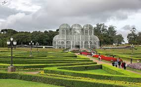

L’idée de développement durable appliquée à la ville émerge dès les années 1970, dans un contexte de prise de conscience écologique mondiale.
Mais ce n’est qu’en 1987, avec le rapport Brundtland, que le terme "développement durable" est formellement défini, posant les bases d’une vision urbaine plus respectueuse des ressources et des générations futures.
Dans les années 1990, plusieurs villes pionnières comme Curitiba (Brésil) ou Fribourg (Allemagne) expérimentent des politiques d’urbanisme écologiquement responsables.

Depuis les années 2000, les politiques durables se multiplient à l’échelle locale : écoquartiers, transports en commun propres, tri sélectif, toits végétalisés…
L’Agenda 21 local a également permis d’intégrer la durabilité dans les décisions municipales.
Ces dernières années, la montée des préoccupations climatiques et sociales a renforcé l'engagement des villes, qui deviennent des laboratoires d’innovations environnementales et sociales.